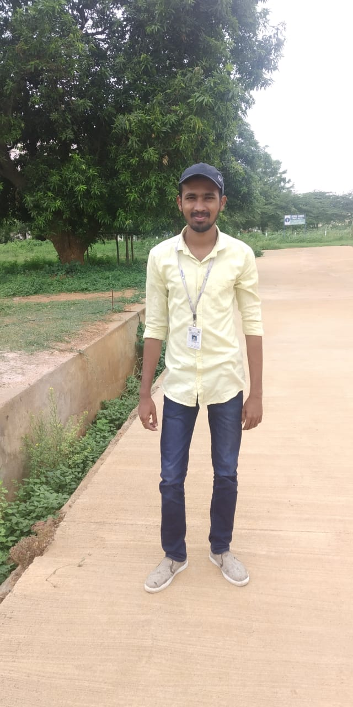

Bhanu Chandar Reddy
7013229479
bhanuchandarreddy07@gmail.com
Address
Kaza(Guntur)
Career Objective
To obtain a significant and challenging position as a financial analyst advisor wherein I will learn and excel in finance operation processes. A job that provides me a scope for growth in the finance vertical
Education Qualifications
V.V.I.T
2016-2018,71%
UNIVERSAL
2012-2016,69%
SRI CHAITANYA
2010-2012,77%
S.S.V.VIHAR
2009-2010,82%
Technical Skills
| Languages |
DataBases |
Operating Systems |
C,C++,
MS OFFICE,JAVA,Python,C,WebTechnologies(HTML,CSS)
IOT |
SQL,MySQL |
Linux,Windows,ubuntu |
Work Experience
Multi Skill Trainer at APSSDC JUNE 2019 - PRESENT
Andhra Pradesh State Skill Development Corporation Main role of APSSDC is Implement a structured and pragmatic solution to skill and upskill the workforce in the state of A.P. and to
increase employability, and promote entrepreneurship in sync with Industrial growth of the State.
Having 1 year of experience in training students in Engineering colleges throughout APSSDC on various technologies Like Raptor,Python,AWS,Data Science,GIT & GITHUB,Google Productivity Tools.
Trained 700+ students in Workshops & Multi Skill Traning Program.